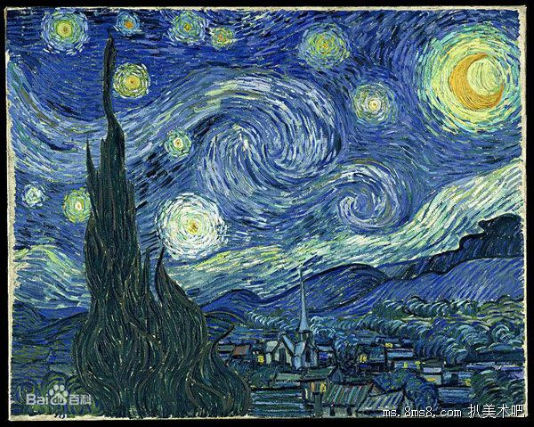

印象派是19世纪诞生于法国的绘画流派，其取得的艺术成就非常辉煌，莫奈的《日出?印象》、梵高的《星空》等都是令人耳熟能详的作品，有极高的鉴赏价值。如果将印象派加以细分的话，可以分为印象主义、新印象主义、后印象主义三种，了解它们各自的风格特点，会开阔我们的视野，对我们日常的创作有启发意义。今天，我们就来简单地为大家介绍一下。
日出·印象 《日出·印象》是印象主义的代表，其风格为：在绘画中注重对光的研究，因此，以光线和色彩来表达和捕捉自然界中的美妙瞬间。同时，与写实派的理性表达相反，印象主义更加感性，富有感情，研究不同光线对物体的影响。代表作品还有德加的《会计师和女儿们》，雷诺阿的《包厢》、《红磨坊街的露天舞会》等。
大碗岛上的星期日下午 新印象主义是印象主义的一个支派，修拉的《大碗岛上的星期日下午》是其代表，它在印象主义的基础上，进行了更加深入的研究，并且形成了理论，使创作更具有科学性。其风格为：由于一切物象的色彩都是分割的，必须把不同纯色彩的点和块调混在一起，对比强烈，最终产生视觉混合的色彩效果。又被称为“科学的印象主义”。
星空 严格意义上来讲，后印象主义并不是一个派别，是指梵高、高更、塞尚三人的创作。他们在创作时，认为应该更多地表现出画家对客观事物的感受，强调主观色彩，因而不受客观事物状况的束缚，重视对纯色块的运用，追求平面鲜明的色调，表现力和感染力高。除《星空》之外，高更的《我们从哪里来？我们是谁？我们往哪里去？》和《圣维克多山》也被世人所熟知。